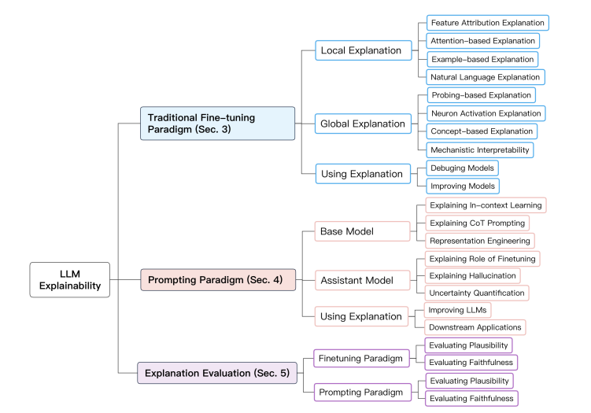

My Two Cents on Agentic AI#
Agentic AI, agent-based approaches, or agentic workflows have become popular buzzwords in our field. While it has been claimed to be very promising, what it entails in terms of practical implementations and best practices is still very new and developing. Even when industry leaders such as Andrew Ng have praised the rise of agentic workflows, the specifics remain vague. As a practitioner, what spawned my motivation to investigate further is how I can hop on the train to the future and leverage such a system. As I dig deeper, I’ve found that the shapes and forms of agentic workflows are not as clear as I thought, even though the internet is flooded with articles and videos on the topic. I am not going to throw a bunch of marketing adjectives to describe it; instead, what I try to offer is a cleaner definitional abstraction of the idea, some examples, and some honest opinions on the topic.
The Very Core Definition#
Definition
An agentic AI system is a system that grants an AI the authority to govern autonomously within a workflow.
An agentic AI system is a system that grants an AI the authority to govern autonomously within a workflow. The governance part consists of two essential roles: 1. to evaluate the given state within the workflow (interchangeably, think and reason etc.); 2. to execute actions based on the evaluation. During the evaluation phase, the system will involve the AI to analyze and interpret the current context, and determine the subsequent actions in order to pursue objectives. Execution is where the AI’s decisions (determined actions) are taken into effect.
In comparison, traditional workflows are designed to follow a set of static control logic in which every decision point and action are explicitly programmed, which yields no autonomy. An easy distinction differentiating highly agentic workflows from traditional workflows is that the control logic is not predefined, but rather is created dynamically from the AI’s evaluation and execution processes (of course, the meta-level framework defining the scope of the dynamic control logic is still defined by a human designer). But the difference is less distinguishable in some simple cases - for example, if the actions primarily involve choosing pre-defined downstream routines at a fixed decision point, you may call it a traditional workflow or an agentic workflow in the minimal sense. In contrast, a highly agentic system is likely to involve more complex actions, such as spawning new and even unseen steps in the workflow, or even dynamically changing the control flow based on the evaluation results. The concept of agentic in AI systems is better understood as a continuum rather than a discrete categorization.
Other Components of Agentic System#
The following attributes are commonly associated with agentic systems, though I don’t find that they are exclusive to such systems and can be found in other types of systems that leverage AIs, or they are simply a derivative of the core components:
Memory: The capacity to retain and utilize contextual information for evaluation.
Reasoning: The capability to analyze and process given data.
Planning: The aptitude for determining subsequent actions or steps.
Tool Calling: The ability to leverage external resources or APIs or executing specific commands.
Memory Serves to provide context. The specific mechanism by which this contextual information is retrieved and presented to the agent’s evaluation component is not yet conventionalized and remains open to various implementations. There could be some conversation history, system execution logs and even chunks of persistent data from a vector database. Reasoning and planning can be viewed as specific forms of evaluation - reasoning for analysis and planning for future actions. Tool calling essentially describes the invocation of specific processes with appropriate parameters, which can be considered a subset of the execution phase in a broader sense. These attributes also present in non-agentic systems.
The Term agentic#
The term agent, while seemingly new in the field of large language models, has roots in other domains such as simulation modelling, which have existed for some time. At its core, an agent interacts with its environment, making decisions based on the surrounding context. This approach gives the impression of cognitive, human-like behavior. As stated, what sets agentic AI apart is that its behavior isn’t rigidly programmed for every possible environmental state. Instead, it’s equipped with certain heuristics, constraints along with defined goals, allowing it to operate with a degree of autonomy. From a human perspective, we don’t directly control or instruct the agent on every action; rather, we provide objectives and let the agent act on our behalf. This creates a relationship of agency between humans and the program, where the AI system functions as an intelligent delegate working towards our specified aims.
The term “agentic”, however, is descriptive rather than prescriptive, primarily referring to the degree of autonomy an AI system has. This can be confusing and vague to practitioners as as there are no prescriptive boundaries. As AI continues to evolve, the term “agentic” may prove to be a transitory concept - a marker of our current immature position on the path to more AI-delegated systems, rather than a permanent or strictly defined category, given every AI system is expected to be agentic.
Levels of Workflow Autonomy in Agentic Workflows#
As discussed, agentic descriptively refers to a level on the autonomy continuum or spectrum. To better understand the implementation and challenges of agentic workflows, it’s useful to break down this spectrum into distinct levels. Here’s a my extrapolated breakdown of the autonomy spectrum in workflows, from least to most autonomous:
Static Workflow: - Predetermined sequence of tasks - No AI decision-making involved - Highly predictable but inflexible
Static Workflow with AI Routing: - Predefined tasks with AI at specific decision points - AI chooses between predetermined options - Limited flexibility within a structured framework
Dynamic Closed Workflow: - Finite set of predefined routes or tasks - AI freely assembles control flow toward a goal - Increased adaptability within constrained options
Dynamic Open Workflow: - No predefined workflow blueprints - Assumes access to a vast array of tools or ability to create tools - AI can write and execute code snippets as needed - Highest level of flexibility and autonomy
Despite the the hype of agentic AIs, most real-world AI systems fall somewhere between 1 and 3. A common scenario is often just an AI agent paired with a specific tool, essentially functioning as an argument parser for that tool. Many software packages claiming to provide the underlying framework for agentic systems often impose opinionated designs and oversimplify the complex challenges faced in real-world scenario. And LLMs at the current stage, which form the backbone of many agentic systems, haven’t yet evolved to a point where they can provide consistently reliable performance across diverse tasks and contexts.
Here Are Some Examples..#
The ReAct agent, based on the paper Synergizing Reasoning and Acting in Language Models, implements an iterative question-answering strategy that combines reasoning and acting. It uses a language model to generate thoughts, choose actions (searching, looking up information, or finishing the task), and process observations. This cycle repeats until the agent formulates an answer.
# source: https://github.com/ysymyth/ReAct
instruction = """Solve a question answering task with interleaving Thought, Action, Observation steps. Thought can reason about the current situation, and Action can be three types:
(1) Search[entity], which searches the exact entity on Wikipedia and returns the first paragraph if it exists. If not, it will return some similar entities to search.
(2) Lookup[keyword], which returns the next sentence containing keyword in the current passage.
(3) Finish[answer], which returns the answer and finishes the task.
Here are some examples.
"""
webthink_prompt = instruction + webthink_examples
def webthink(idx=None, prompt=webthink_prompt, to_print=True):
question = env.reset(idx=idx)
if to_print:
print(idx, question)
prompt += question + "\n"
n_calls, n_badcalls = 0, 0
for i in range(1, 8):
n_calls += 1
thought_action = llm(prompt + f"Thought {i}:", stop=[f"\nObservation {i}:"])
try:
thought, action = thought_action.strip().split(f"\nAction {i}: ")
except:
print('ohh...', thought_action)
n_badcalls += 1
n_calls += 1
thought = thought_action.strip().split('\n')[0]
action = llm(prompt + f"Thought {i}: {thought}\nAction {i}:", stop=[f"\n"]).strip()
obs, r, done, info = step(env, action[0].lower() + action[1:])
obs = obs.replace('\\n', '')
step_str = f"Thought {i}: {thought}\nAction {i}: {action}\nObservation {i}: {obs}\n"
prompt += step_str
if to_print:
print(step_str)
if done:
break
if not done:
obs, r, done, info = step(env, "finish[]")
if to_print:
print(info, '\n')
info.update({'n_calls': n_calls, 'n_badcalls': n_badcalls, 'traj': prompt})
return r, info
Langchain implements a wrapper.
# implementation in langchain:
from langgraph.prebuilt import create_react_agent
graph = create_react_agent(model, tools=tools)
The agent handles complex queries by decomposing them into simpler parts, using appropriate tools for each sub-question, and then reconstructing a coherent overall answer.
# source: Llama Index: https://docs.llamaindex.ai/en/stable/examples/query_engine/sub_question_query_engine/
class SubQuestionQueryEngine(Workflow):
@step(pass_context=True)
async def query(self, ctx: Context, ev: StartEvent) -> QueryEvent:
if (hasattr(ev, "query")):
ctx.data["original_query"] = ev.query
print(f"Query is {ctx.data['original_query']}")
if (hasattr(ev, "llm")):
ctx.data["llm"] = ev.llm
if (hasattr(ev, "tools")):
ctx.data["tools"] = ev.tools
response = ctx.data["llm"].complete(f"""
Given a user question, and a list of tools, output a list of
relevant sub-questions, such that the answers to all the
sub-questions put together will answer the question. Respond
in pure JSON without any markdown, like this:
{{
"sub_questions": [
"What is the population of San Francisco?",
"What is the budget of San Francisco?",
"What is the GDP of San Francisco?"
]
}}
Here is the user question: {ctx.data['original_query']}
And here is the list of tools: {ctx.data['tools']}
""")
print(f"Sub-questions are {response}")
response_obj = json.loads(str(response))
sub_questions = response_obj["sub_questions"]
ctx.data["sub_question_count"] = len(sub_questions)
for question in sub_questions:
self.send_event(QueryEvent(question=question))
return None
@step(pass_context=True)
async def sub_question(self, ctx: Context, ev: QueryEvent) -> AnswerEvent:
print(f"Sub-question is {ev.question}")
agent = ReActAgent.from_tools(ctx.data["tools"], llm=ctx.data["llm"], verbose=True)
response = agent.chat(ev.question)
return AnswerEvent(question=ev.question,answer=str(response))
@step(pass_context=True)
async def combine_answers(self, ctx: Context, ev: AnswerEvent) -> StopEvent | None:
ready = ctx.collect_events(ev, [AnswerEvent]*ctx.data["sub_question_count"])
if ready is None:
return None
answers = "\n\n".join([f"Question: {event.question}: \n Answer: {event.answer}" for event in ready])
prompt = f"""
You are given an overall question that has been split into sub-questions,
each of which has been answered. Combine the answers to all the sub-questions
into a single answer to the original question.
Original question: {ctx.data['original_query']}
Sub-questions and answers:
{answers}
"""
print(f"Final prompt is {prompt}")
response = ctx.data["llm"].complete(prompt)
print("Final response is", response)
return StopEvent(result=str(response))
It first interprets natural language instructions like “calculate the distance between the shark and the nearest surfboard,” then generate a sequence workflow, generate code to perform object detection to identify sharks and surfboards in images or video frames, calculates distances between them.
CrewAI is a framework that enables the creation of multi-agent AI systems through a modular approach. It allows users to define custom AI agents with specific roles and goals, create detailed tasks, assemble these components into a ‘Crew’, and execute complex workflows.
# source: crewai
# agent.py
from crewai import Agent
researcher = Agent(
role='Senior Researcher',
goal='Uncover groundbreaking technologies in AI',
backstory='Driven by curiosity, you explore and share the latest innovations.'
)
# task.py
from crewai import Task
research_task = Task(
description='Identify the next big trend in AI with pros and cons.',
expected_output='A 3-paragraph report on emerging AI technologies.'
)
# main.py
from crewai import Crew, Process
crew = Crew(
agents=[researcher],
tasks=[research_task],
process=Process.sequential
)
result = crew.kickoff(inputs={'topic': 'AI in healthcare'})
print(result)
This is an example of a minimal agentic RAG built using LangGraph.
# source: https://langchain-ai.github.io/langgraph/tutorials/rag/langgraph_agentic_rag/
from langgraph.graph import END, StateGraph, START
from langgraph.prebuilt import ToolNode
# Define a new graph
workflow = StateGraph(AgentState)
# Define the nodes we will cycle between
workflow.add_node("agent", agent) # agent
retrieve = ToolNode([retriever_tool])
workflow.add_node("retrieve", retrieve) # retrieval
workflow.add_node("rewrite", rewrite) # Re-writing the question
workflow.add_node(
"generate", generate
) # Generating a response after we know the documents are relevant
# Call agent node to decide to retrieve or not
workflow.add_edge(START, "agent")
# Decide whether to retrieve
workflow.add_conditional_edges(
"agent",
# Assess agent decision
tools_condition,
{
# Translate the condition outputs to nodes in our graph
"tools": "retrieve",
END: END,
},
)
# Edges taken after the `action` node is called.
workflow.add_conditional_edges(
"retrieve",
# Assess agent decision
grade_documents,
)
workflow.add_edge("generate", END)
workflow.add_edge("rewrite", "agent")
# Compile
graph = workflow.compile()
The subtle difference distinguishing it from traditional RAG is the dynamic routing mechanism, which allows the agent to call the retriever to fetch more relevant information and to continuously perform iterative refinement and decision-making based on newly acquired information.

What Makes It Appealing#
Less Human Workload: The key intention of agentic workflow is task delegation, which means less labor involvement in routine or complex tasks, very much a step up in automation from traditional AIs. LLM-powered agentic AI systems can handle a wider range of tasks that were previously challenging due to variation and complexity that would require human judgement.
Human-Compatible Interface: Agentic AI systems include a human compatible interface layer in the application systems. Unlike traditional systems that require technical knowledge to interact with APIs, these AI agents allow users to communicate their needs using natural language. This immediately makes everyone accessible to the application.
Goal-Orientation: Rather than programming specific tasks, users can simply state their objectives to an agentic system. Assuming the agent has the necessary capabilities and tools, it could determine the steps required to achieve the given goals. This shift from task-oriented to goal-oriented interaction significantly reduces developers’ workloads.
Better Adaptability: While static automation has been adopted in many industries, it often comes with high setup costs and limited flexibility. Agentic systems offer a more dynamic alternative. They can adapt to new and possibly unseen scenarios and requests without extensive reprogramming, making them more flexible in contextual differences.
Theoretical Challenges of Agentic Workflows#
These are challenges arising from delegating decision-making to AI systems:
Reliability and Consistency Concerns: There is an irony here, one of the key reasons why we use programmatic workflows is to eliminate human errors in the process, but aren’t agentic systems also prone to AI errors as we authorize the AIs to make decisions? Programmatic systems can be refined to ensure 100% reliability in production, whereas agentic systems has potential for unexpected failures or behavior in critical scenarios. It is also difficulty in guaranteeing consistent performance across all possible inputs and situations.
Misalignment & Mistranslation: Even if we have a clear vision in mind, there is always a risk of misinterpreted instructions due to different types of mistranslations.
Reduced Oversight and Control: As agentic workflows become more flexible and autonomous, predicting and controlling system behavior becomes difficult. In addition, the more complex the system, the harder it becomes to intervene effectively when issues arise. This could lead to a reduced ability to quickly correct or halt problematic processes. Injecting programmatic patches becomes incredibly challenging, and it could potentially impact working processes in the workflows.
Model Dependency and Volatility: The core reliance on AI models introduces volatility to the system. Updating or changing the underlying AI model in an agentic workflow can significantly alter system behavior and performance. This challenge is akin to hiring a new employee. There’s also uncertainty in how well new models will integrate with existing systems. Each significant model update may require recalibration of the entire system, potentially disrupting established processes.
Implementation Matters of Agentic AIs (Today)#
By looking at the examples, it may seem setting up an agentic workflow is simply integrating an LLM with a system prompt, function toolbox, and output parser, then implementing a loop that processes inputs, executes actions, and updates state until task completion. But to really apply them in practice, we will certainly have to construct a framework to maintain control over the behaviors of agentic workflows confidently. This section addresses the often-overlooked issues in implementing agentic AIs and offers my personal suggestions.
Detailed Project Evaluation#
Implementing AI systems in business environments requires consideration of both potential gains and challenges before initiating development. Agentic AI systems are even more complex, therefore requiring even more extensive project assessment, particularly regarding the management of risks associated with AI errors. Businesses should always conduct detailed value analyses against the cost of maintenance. Not all automation yields higher returns than human labor, particularly in the case of highly autonomous agentic systems needing constant maintenance and expertise.
There are also risks associated with AI errors or under-performance, such as taking incorrect actions that could cause inconvenience or harm to users, which may result in unexpected liabilities. External mitigation strategies for these cases should be prepared. It’s advisable to adopt gradual implementation approaches, such as starting with proof-of-concept (PoC) projects before full commitment and maintaining parallel systems during transition periods. Additionally, it’s important to ensure that an AI governance framework accompanies the development of agentic AI, ensuring responsible use within compliance.
Agentic Architecture: Balanced Level of Autonomy#
After conducting a detailed project assessment, we ought to decide what level of autonomy to equip our agentic system with. At the time of writing, the concept of agentic AI is still evolving, and the ecosystem lacks sufficiently robust tools and language models to support full-fledged autonomy. This technological gap, coupled with the inherent complexity of agentic systems, calls for a balanced approach to implementation. In essence, the level of autonomy should be carefully decided based on the project requirements, available technologies, and the need for control.
Personally, I prefer building this type of solution with graph-based workflow orchestrators, which can support up to the level of dynamic closed workflows while giving us a static style of control. This approach allows for the insertion of additional measures for reliability and security while maximizing transparency, even though it may require more development effort. The benefit is a more controllable and predictable system.
Transparency by Design#
Transparency is the foundation for gaining control - We need to understand the agent’s decision-making process at every step. Not only that it enables regulatory compliance with ethical guidelines and legal requirements, but also it allows for effective monitoring and human intervention when necessary. There are two types of processes within a workflow we need strict scrutiny on: 1. generation by AI models, namely, how AI decisions are made & 2. agentic system processes.
While explainable AI for LLMs is still an under-developed field, it is still possible to implement an interaction strategies around AI models for greater explainability. For example, Chain-of-Thought (CoT) Prompting, which is technique encourages the AI to articulate its reasoning process step-by-step. There are many other explainability techniques for the underlying LLMs, you may also check out this great paper (Explainability for Large Language Models: A Survey) I found recently, which provides structured overview of methods for explaining LLMs.
{kind=link}
It is a lot easier to improve system level transparency. First of all, implement reproducible workflows that allows execution of specific steps. This is particularly useful for debugging stochastic processes where bugs may not consistently reappear. This will require your implement a state management system that record not just the AI’s actions, but also the context such input data and scores in which decisions were made. You may use workflow orchestrator like DAG manager to wrap individual steps and save crucial inputs and outputs to a database at runtime. Projects like LangGraph are exploring this approach. However, notice that many solutions may not support dynamic workflow generation.
Reliability & Alignment#
Ensuring reliability and alignment is the most challenging yet crucial aspect of developing agentic AI systems, particularly when they are permitted to undertake a sequence of tasks without direct oversight. The more autonomy granted to the system, the harder it becomes to regulate its behavior due to the absence of hard-coded restrictions between actions.
Reliability in this context means consistently delivering services at expectation while maintaining alignment with intended goals and ethical requirements. Key challenges include tackling hallucinations, bias management, maintaining interpretability, achieving robustness to adversarial intents, long-term consistency, regulatory compliance and etc. You should assume that underlying models may occasionally produce biased or undesired outputs, necessitating both system refinement and post-factum gatekeeping patterns integrated into system pipelines.
To enhance reliability and alignment:
1. Identify the required proficiency for the underlying tasks, choose a competent model. 1. Implement constraints to keep the AI within its intended scope. 2. Design flexible systems that allow for constant improvement, recognizing that perfection is a long-tailed goal. 3. Break complex tasks into well-defined mini-steps for better control and evaluation if possible. 4. Develop contingency plans for failure scenarios. 5. Conduct thorough monitoring and testing at any time especially before rollout, including edge case analyses. 6. Integrate risk assessment into the entire AI development lifecycle.
We should acknowledge that this is an ongoing process requiring continuous monitoring, evaluation, and refinement.
Context Memory Management#
Managing memory is more than concatenating interaction history and requires a better approach to maintain relevant information. Feeding excessive context during evaluation rounds can confuse the underlying models and increase computational costs. There’s also the risk of overwhelming the token size with context, resulting in missing instructions or, worse, enabling the unintended sharing of sensitive data with end users. There are strategies we can use for memory management in agentic systems.
Dynamic Context Selection: Implementing algorithms to dynamically select the most relevant pieces of context for each interaction. This can involve relevance scoring based on semantic similarity to the current query, recency weighting to prioritize more recent interactions, and task-specific context filtering using LLMs.
Context Summarization: Instead of using full conversation history, generate and use summaries for the subsequent rounds of interation.
Context Isolation: Maintaining separate context pools for different tasks or agents.
Topic Tagging: Effective topic tagging involves automatically tagging conversation segments with relevant topics and using these tags to quickly retrieve relevant context when a topic resurfaces.
Context Formatting: Structuring the context in a way that helps the underlying model locate relevant information.
Privacy Aware Context Management: implement context scrubbing to mask sensitive information and using role-based access controls to limit which parts of the context are accessible to different components of the system. In addition, as very likely context will be also cached and save, additional measures need to be in place to prevent sensitive information being leaked and saved to additional databases.
Cost and Speed#
Agentic workflows often involve multiple rounds of reasoning, which can significantly increase inference costs. One approach is to use different models for different purposes within the workflow. Smaller fine-tuned models can be utilized for specific tasks, while larger models handle more complex reasoning. Additionally, LLM distillation is another promising paradigm that focuses on transfer knowledge to smaller generative models for specific tasks. This not only reduces deployment costs but can also lower per-token expenses. Alternatively, Instead of having the AI agent perform multiple separate reasoning steps, we can consolidate prompts that combine several reasoning tasks into a single, more complex prompt.
For customer-facing applications like chatbots, low latency is crucial. In cases where queries are often repetitive or involve general information, implementing response caching can significantly cut down computational costs. This involves saving results and using a query classifier to identify and quickly retrieve responses for frequently asked questions.
Evaluation & Testing#
Comprehensive evaluation and testing are crucial for agentic AI systems to ensure quality outcomes and human alignment. However, evaluating semantic outputs are difficult:
Agentic systems compound AI stochastic reasoning.
Semantic outputs are difficult to evaluate against expectations.
Creative processes can produce diverse outputs.
The diversity of inputs and contexts makes it impossible to cover all scenarios, unlike in deterministic workflows.
To evaluate a AI system, we generally employ the following schools of methods:
Statistical Metrics:
Useful for short answers where expected outputs are relatively predictable.
Examples include BLEU and ROUGE, which calculate precision or recall by comparing n-gram overlaps between LLM outputs and expected outputs.
Fast and scalable for large datasets, but limited to surface-level textual similarities, and may not capture semantic meaning or context.
Model Evaluators:
Leverage strong LLMs to assess the quality of another LLM’s outputs.
Can provide more evaluation of complex responses.
But there may already be biases in the evaluator model.
Requires a trusted and competent model, can be computationally expensive.
User Feedback and Human Evaluation:
Often the most reliable method for assessing AI performance.
Can include ordinal data such as satisfaction scores or qualitative responses, which provides qualitative insights for improvement.
External Task Specific Benchmarks:
Often includes diverse and challenging test cases.
May not reflect the performance in our use cases.
When evaluating agentic AI systems, you should assess multiple dimensions besides its quality performance. Key aspects include the relevancy and correctness of outputs, the system’s ability to avoid hallucinations, its resistance to generating toxic content, and the consistency of responses across various inputs. Beyond these semantic qualities, it’s also crucial to evaluate operational metrics that impact user experience and system reliability. These include task completion time, and perhaps data retrieval accuracy, which serves as a proxy for overall correctness and can indicate how well the system accesses and utilizes its knowledge base.
Human Intervenability#
Errors can occur in various forms, from systematic bugs to misalignment of outcomes with intended goals. It’s crucial to design these systems with robust human intervenability features. You may implement checkpoints within the agentic system that require human approval before proceeding to the next task. This is known as human approval mechanism, which businesses might implement for high impact decisions. Alternatively, you may also design the system with the ability for human to override AI decisions and modify the inputs and outputs at any point in the process. This allows continuation of the workflow when the system encounters bugs such as invalid data formatting by LLMs.
Security & Confidentiality#
Agentic AI systems, by their nature, are compound systems that interact with various components in your infrastructure. Granting AI agents authority to access system components such as databases introduces inherent risks. External tools and processes that agentic systems can invoke proactively must be carefully controlled and monitored. There are multiple areas we should look at to address the system security issues.
Risk Exposure Assessment: This involves identifying, analyzing, and evaluating the potential risks that the system may be exposed to. Common risks are prompt injection by users, data breach risks due to engineering flaws, and unintended actions due to misinterpretation by AIs. This understanding forms the foundation for building security strategies, implementing controls, and designing incident response plans.
Access Control: Ensure that agents have only the minimum necessary access to perform their designated tasks. For example, implement pre-configured clients for database access (instead of letting the system access the connection configuration), eliminating any possibility of direct, uncontrolled access.
Data Governance and Security Issues during Training: When fine-tuning LLMs to improve performance, there’s a risk of data leakage during the training process. Establish strict data governance procedures with independent auditing for training. During the inference stage, ensuring that context and confidentiality are maintained throughout the AI’s operations.
Multi-layered Security Measures: Implement additional protective layers, such as rule sets that govern AI behavior and alert systems that monitor user interactions for any suspicious activities. For example, implement a validator against the end-user privilege, checking whether they could carry on certain operations.
Output Sanitization: Implement robust output filtering mechanisms to ensure that sensitive information is not disclosed. This includes validating generated outputs against predefined patterns or rules using models or REGEX before presenting results to end users.
Architectural Isolation: Break up the agentic systems into smaller, independent microservices, this approach limits the potential damage from a security breach to a single service.
Intervention Protocol: Intervention protocols are pre-planned procedures to rapidly respond to security threats, including the ability to partially or completely shut down the system if necessary. Also provides override capabilities and allow human intervention once potential security threats are detected.
Accountability & Contingency Planning#
Implementing agentic AI systems that assist in decision-making processes comes with significant ethical and legal risks. Key concerns include protecting privacy, mitigating biases, ensuring explainable AI decisions, and maintaining regulatory compliance. As AI systems can make mistakes, it’s crucial to establish measures for accountability. To address the issues:
Regularly audit data to uncover potential biases, monitor system performance for unfair outcomes, and incorporate human feedback to address discovered biases for fine tuning.
Implement additional validation layers for agentic system outputs, including providing knowledge reference links and accompanying explanatory notes to enhance transparency, verifiability therefore accountability.
Establish clear ethical guidelines for AI development with oversight mechanisms to stay compliant with the regulations.
Develop clear protocols for handling disputes or complaints related to AI decisions.
Create contingency plans that include incident response strategies e.g., rollback for scenarios like data breaches or system malfunctions.
Closing Thoughts#
Sure, the concept feels like the primitive form of AGI in the future - I would imagine that such an AI system is equipped with a good enough AI model that acts as the central brain and is given extensive control of the underlying system with tools it could leverage. Then we will truly interact with the AI system as if it is an intelligent agent. For now, we will need to learn what decisions are delegated to an AI agent if we are building an agentic system. The evaluation of risks and effects should be fully examined. To practitioners, reliability is more important than features. You should always prepare countermeasures in case it fails.